In this blog, four approaches of simulating a two-dimensional heat diffusion will be presented: matrix multiplication, sparse matrix in JAX, direction operation with numpy, and with jax.
This introductory explanation of the mathematical concept is derived from Professor Ko’s Homework Blog
N =101# N is the dimension of the gridepsilon =0.2import numpy as npfrom matplotlib import pyplot as plt# construct initial condition: 1 unit of heat at midpoint. # Initializes a grid for simulation with a single unit of heat placed at the center.u0 = np.zeros((N, N)) # u0: ndarrayu0[int(N/2), int(N/2)] =1.0plt.imshow(u0)
Approach 1: Simulation With Matrix Multiplication
We will first uses matrix-vector multiplication to simulate the heat diffusion in the 2D space. The vector here is created by flattening the current solution . Each iteration of the update is given by:
def advance_time_matvecmul(A, u, epsilon):"""Advances the simulation by one timestep, via matrix-vector multiplication Args: A: The 2d finite difference matrix, N^2 x N^2. u: N x N grid state at timestep k. epsilon: stability constant. Returns: N x N Grid state at timestep k+1. """ N = u.shape[0] u = u + epsilon * (A @ u.flatten()).reshape((N, N))return udef get_A(N): """The function get_A(N) takes the value N as the argument and returns the corresponding matrix A """ n = N * N diagonals = [-4* np.ones(n), np.ones(n-1), np.ones(n-1), np.ones(n-N), np.ones(n-N)] diagonals[1][(N-1)::N] =0 diagonals[2][(N-1)::N] =0 A = np.diag(diagonals[0]) + np.diag(diagonals[1], 1) + np.diag(diagonals[2], -1) + np.diag(diagonals[3], N) + np.diag(diagonals[4], -N)return A
u = [u0]A = get_A(N) # Generate the Matrix Afor i inrange (1,2701): # Loop for 2700 iterations u.append(advance_time_matvecmul(A, u[-1], epsilon))
We observe the performance of approach 1 is excruciating slow. It takes 55.5s.
# Visualizationfor i inrange (1,2701):if i%300==0: # Check if the current step is a multiple of 300 plt.imshow(u[i-1]) # Since the list index starts at 0, we use i-1 to access the ith time step# Plot the solution at this time step using matplotlib's imshow plt.show()
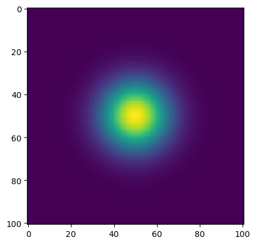
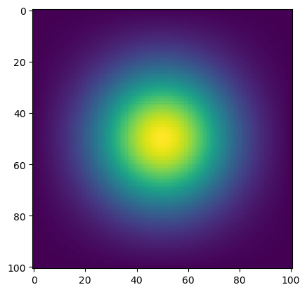
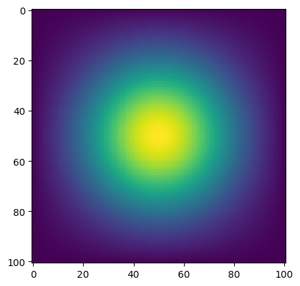
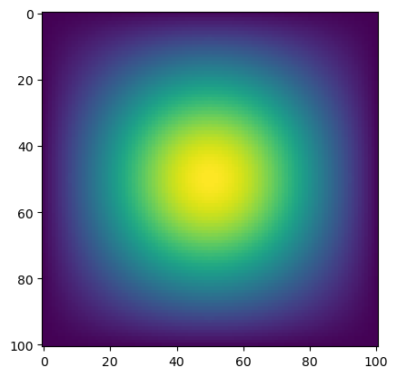
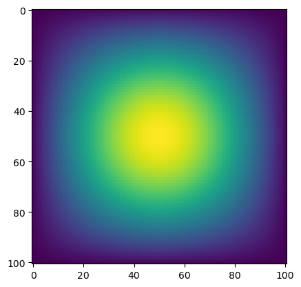
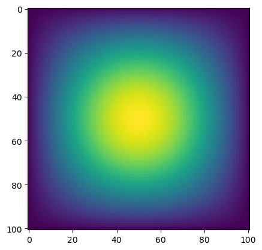
Approach 2: Sparse Matrix in JAX
“In the previous approach, most operations are wasted for computing zeros. As for Approach 2 , we can use the data structure that exploits a lot of zeros in the matrix A: sparse matrix data structures. There is a experimental sparse matrix support in the JAX package. We can use the batched coordinate (BCOO) format to only use O(N^2) space for the matrix, and only take O(N^2) time for each update. Note that there are several sparse matrix representations for more general sparsity patterns, includin CSR (Compressed Sparse Row), CSC (COmpressed Sparse Column), COO (Coordinate formate), etc.”
We will define a function get_sparse_A(N), which returns A_sp_matrix, a matrix A in a sparse format, given N in heat_equation.py. At the same time, we repeate Part 1 using get_A_sparse() and the jit-ed version of advance_time_matvecmul.
import jax.numpy as jnpfrom jax.experimental import sparsefrom jax import jitimport matplotlib.pyplot as pltN =101epsilon =0.2# Converting initial condition to JAX arrayu0 = jnp.zeros((N, N)) # Initialize the grid to zerou0 = u0.at[int(N/2), int(N/2)].set(1.0) # Set the middle center element to 1.0def get_sparse_A(N): n = N * N# Define the diagonals for the Laplacian matrix diagonals = [-4* jnp.ones(n), jnp.ones(n-1), jnp.ones(n-1), jnp.ones(n-N), jnp.ones(n-N)] diagonals[1] = diagonals[1].at[(N-1)::N].set(0) diagonals[2] = diagonals[2].at[(N-1)::N].set(0) # Adjust for the grid boundary# Use JAX to construct the dense Laplacian matrix and convert to sparse format A_dense = jnp.diag(diagonals[0]) + jnp.diag(diagonals[1], 1) + jnp.diag(diagonals[2], -1) + jnp.diag(diagonals[3], N) + jnp.diag(diagonals[4], -N) A_sparse = sparse.BCOO.fromdense(A_dense) # Convert to sparse BCOO formatreturn A_sparse@jitdef advance_time_matvecmul(A, u, epsilon):"""Advances the simulation by one timestep, via matrix-vector multiplication Args: A: The 2d finite difference matrix, N^2 x N^2. u: N x N grid state at timestep k. epsilon: stability constant. Returns: N x N Grid state at timestep k+1. """ N = u.shape[0] # Extract the grid dimension from the current state u = u + epsilon * (A @ u.flatten()).reshape((N, N)) # Scaled change is added to the current state u to produce the updated state""" u.flatten(): this converts the 2D array into a 1D array A@u.flatten: @ is the matrix multiplication operator epislon: scales the result of matrix-vector multiplication and subsequent reshaping """return u
# Repeat Part 1 using get_A_sparse() and the jit-ed version of advance_time_matvecmulu = [u0]A = get_sparse_A(N)for i inrange (1,2701): u.append(advance_time_matvecmul(A, u[-1], epsilon))
In method 2, it only takes 3.8s to run the code for 2700 iterations
for i inrange (1,2701):if i%300==0: plt.imshow(u[i-1]) #the first element is 0 and we want to start at i-1 plt.show()
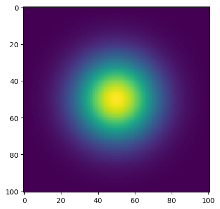
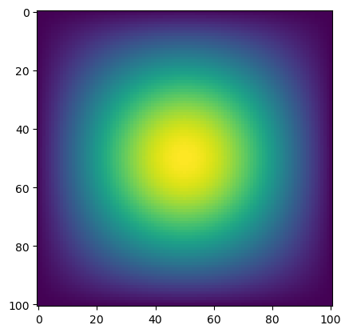
Approach 3: Direct Operation with numpy
We observe that matrix-vector multiplication approach is not absolutely necessary in terms of computation. With vectorized array operations like np. roll(), the operations could be simpler.
We can write a function advance_time_numpy(u, epsilon) that advances the solution by one timestep. We could pay zeroes to the input array to form an (N+2)x(N=2) array internally, but the argument and the returned solution should still be N x N.
import numpy as npimport matplotlib.pyplot as pltdef advance_time_numpy(u, epsilon):""" The function computes the Laplacian of the input grid 'u' via vectorized opertaions, simulating a diffusion process. We use Euler method as the applied update rule. """ N = u.shape[0] # Extract the size of the grid# Pad the input array with zeros on all sides for boundary conditions u_padded = np.pad(u, 1, mode='constant', constant_values=0)# Compute the Laplacian of u using vectorized operations laplacian_u = (np.roll(u_padded, 1, axis=0) + np.roll(u_padded, -1, axis=0) + np.roll(u_padded, 1, axis=1) + np.roll(u_padded, -1, axis=1) -4* u_padded)[1:-1, 1:-1]# Update the grid 'u' based on the Laplacian and the diffusion coefficient 'epsilon' u_next = u + epsilon * laplacian_ureturn u_next
u = u0for i inrange(1, 2701): u = advance_time_numpy(u, epsilon)
We observe Approach 3 only takes 0.2 s to finish.
#Visualizationu = u0for i inrange(1, 2701): u = advance_time_numpy(u, epsilon)if i %300==0: plt.imshow(u) plt.title(f"Iteration {i}") plt.show()
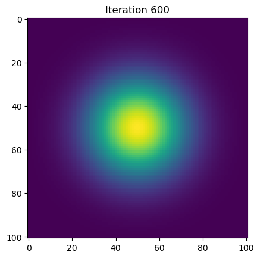
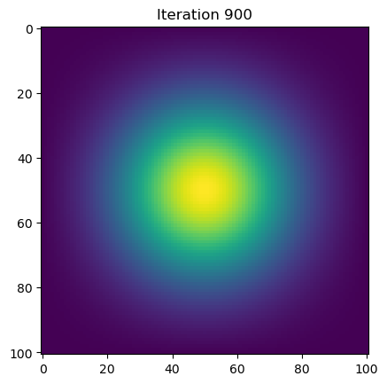
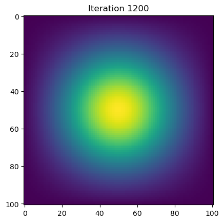
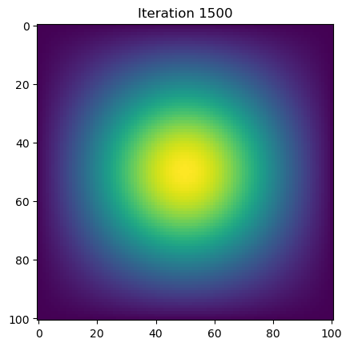
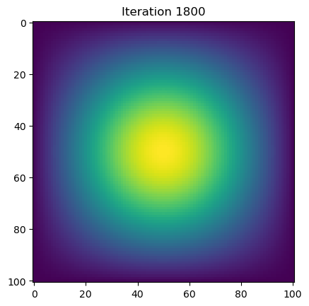
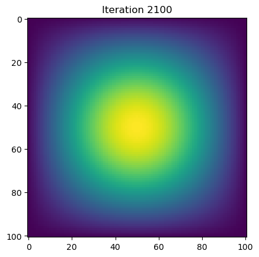
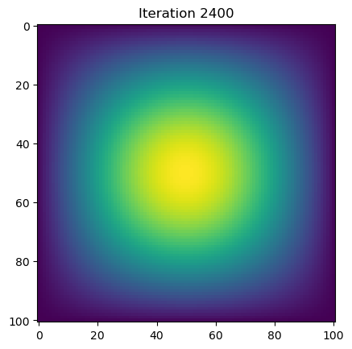
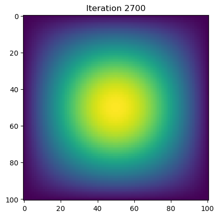
Approach 4: With Jax
Now, we will use jax to do the similar using just-in-time compilation.
“We will define a function advance_time_jax(u, epsilon) without using (sparse) matrix multiplication routines. It will be simple to use the function advance_time_numpy() as the starting point. Keep in mind that jax does not support index assignment.”
import jax.numpy as jnpfrom jax import jit@jitdef advance_time_jax(u, epsilon):""" The function computes the Laplacian of the input array 'u' using direct JAX operations for faster execution. It then updates the simulation state based on the coputed Laplacian and a given epsilon. """ N = u.shape[0]# Pad the input array with zeros to handle edge conditions u_padded = jnp.pad(u, 1, mode='constant', constant_values=0)# Compute the Laplacian using vectorized operations laplacian_u = (jnp.roll(u_padded, 1, axis=0) + jnp.roll(u_padded, -1, axis=0) + jnp.roll(u_padded, 1, axis=1) + jnp.roll(u_padded, -1, axis=1) -4* u_padded)[1:-1, 1:-1]# Update the solution based on the Laplacian and epsilon u_next = u + epsilon * laplacian_ureturn u_nextimport matplotlib.pyplot as pltN =101epsilon =0.2u0 = jnp.zeros((N, N))u0 = u0.at[int(N/2), int(N/2)].set(1.0) # Initial condition
u = u0for i inrange(1, 2701): u = advance_time_jax(u, epsilon)
We observe appproach 4 only takes 0.1s to finish the operation.
# Visualizationu = u0for i inrange(1, 2701): u = advance_time_jax(u, epsilon)if i %300==0: plt.imshow(u) plt.title(f"Iteration {i}") plt.show()


 . Each iteration of the update is given by:
. Each iteration of the update is given by: